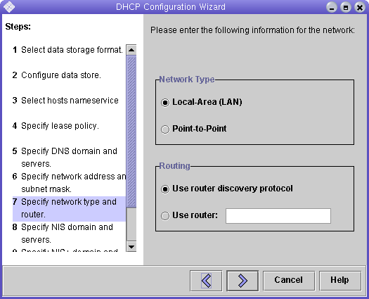
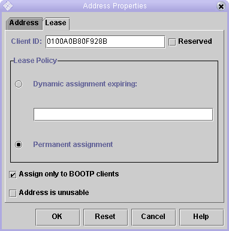

Solaris 8 and 9
The netmasks area of the /etc/nsswitch.conf file has to be adjusted as shown here:
#netmasks:
nis [NOTFOUND=return] files
netmasks: files nis
[NOTFOUND=return]
Run the GUI interface to configure the DHCP server to act as a BOOTP server as shown here:
/usr/sadm/admin/bin/dhcpmgr &


After all this configuration is completed, the DHCP server will be serving BOOTP to the MAC addresses entered for each controller in the array.
You can verify it is running, or try to restart it.
Restart the array and ping the addresses.
If the ping comes back 'alive', then the array's have successfully done a BOOTP via the Solaris DHCP server with the BOOTP option.
You can now manage this array with Element Manager by adding the array using the IP addresses just configured.
To start Element Manager, log in via the Sun Web Console.
https://<your server>:6789
For this example:
https://nsvr-359:6789